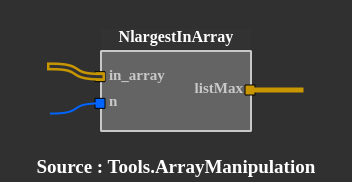
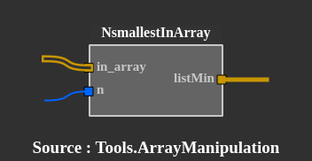
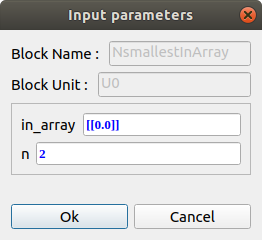

Tools.Comparison_operation
Requirements :
Numpy - pip3 install numpyNlargestInArray :
Check the n largest value in array input.
|  | in_array : array input - array of float n : number of desired largest values out : list of n largest values of in_array - list of float |
 |
NsmallestInArray :
Check the n largest value in array input.
|  | in_array : array input - array of float n : number of desired smallest values out : list of n smallest values of in_array - list of float |
 |